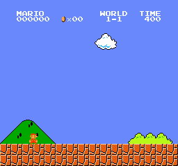

ORIGINAL · 2D
A CLASSIC. A NEW WAY TO PLAY.
The classic,
now in 3D.
All 32 levels, rebuilt for your browser.
Play the original pixel art, or step into a remastered 3D world in up to 4K.
Opens in fullscreen · No download. Just play.
Early preview This recreation is still being polished, so you may notice a few rough edges. Thanks for playing it early.
WORLD 1—1THE ORIGINAL ADVENTURE

YOUR NEXT ADVENTURE STARTS HERESame heart. A fresh perspective.
A little adventure is loading.
Starting the game engine…
…